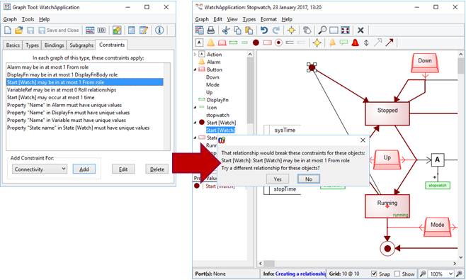
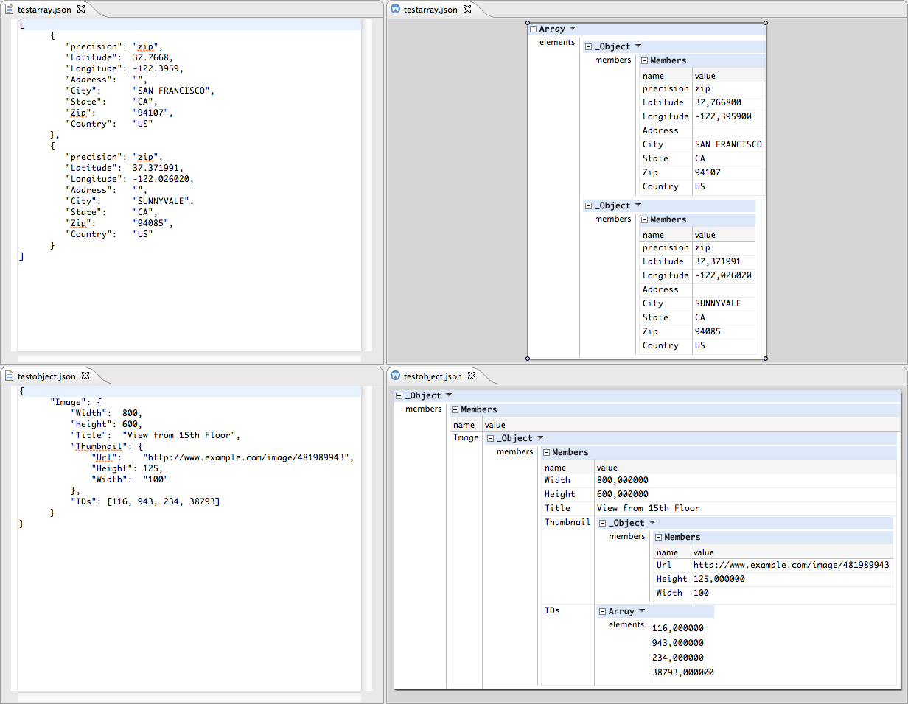

grammar Expr; prog: (expr NEWLINE)* ; expr: expr ('*'|'/') expr | expr ('+'|'-') expr | INT | '(' expr ')' ; NEWLINE : [\r\n]+ ; INT : [0-9]+ ;
%% %left RPAREN; %left MULT, DIV; %left PLUS, MINUS; %typeof NUMBER = "Number"; %typeof expr = "Expr"; %% expr = expr.a MULT expr.b {: return new Expr(a.value * b.value); :} | expr.a DIV expr.b {: return new Expr(a.value / b.value); :} | expr.a PLUS expr.b {: return new Expr(a.value + b.value); :} | expr.a MINUS expr.b {: return new Expr(a.value - b.value); :} | NUMBER.n {: return new Expr(n.doubleValue()); :} | LPAREN expr.e RPAREN {: return e; :} ;
%token TYPE DOTDOT ID %left '+' '-' %left '*' '/' %% type_decl: TYPE ID '=' type ';' ; type: '(' id_list ')' | expr DOTDOT expr; id_list: ID | id_list ',' ID; expr: '(' expr ')' | expr '+' expr | expr '-' expr | expr '*' expr | expr '/' expr | ID;
Abstract data Arith = Add Arith Arith | Sub Arith Arith | Mul Arith Arith | Div Arith Arith | Num Natural | Var String deriving (Show, Eq, Read) Concrete Expr -> Expr '+' Term | Expr '-' Term | Term ; Term -> Term '*' Factor | Term '/' Factor | Factor ; Factor -> '-' Factor | Int | Name | '(' Expr ')' ; Actions Arith +> Expr Add x y +> (x +> Expr) '+' (y +> Term); Sub x y +> (x +> Expr) '-' (y +> Term); exp +> (exp +> Term); Arith +> Term Mul x y +> (x +> Term) '*' (y +> Factor); Div x y +> (x +> Term) '/' (y +> Factor); exp +> (exp +> Factor); Arith +> Factor Sub (Num 0) y +> '-' (y +> Factor); Num i +> (i +> Int); Var n +> (n +> Name); exp +> '(' (exp +> Expr) ')';
%left LO '+' '-' %left HI '*' '/' '%' %nonassoc UNARY %% expr: expr op1 expr %prec LO | expr op2 expr %prec HI | unary expr %prec UNARY ; op1 : '+' | '-' ; op2 : '*' | '/' | '%' ; unary : '+' | '-' | '*' | '&' ;
%left '+' '-' %left '*' '/' %% expr : expr '+' expr | expr '-' expr | expr '*' expr | expr '/' expr | '-' expr %prec '*' | NAME ;
%{ import java.lang.Math; import java.io.*; import java.util.StringTokenizer; %} /* YACC Declarations */ %token NUM %left '-' '+' %left '*' '/' %left NEG /* negation--unary minus */ %right '^' /* exponentiation */ /* Grammar follows */ %% input: /* empty string */ | input line ; line: '\n' | exp '\n' { System.out.println(" " + $1.dval + " "); } ; exp: NUM { $$ = $1; } | exp '+' exp { $$ = new ParserVal($1.dval + $3.dval); } | exp '-' exp { $$ = new ParserVal($1.dval - $3.dval); } | exp '*' exp { $$ = new ParserVal($1.dval * $3.dval); } | exp '/' exp { $$ = new ParserVal($1.dval / $3.dval); } | '-' exp %prec NEG { $$ = new ParserVal(-$2.dval); } | exp '^' exp { $$ = new ParserVal(Math.pow($1.dval, $3.dval)); } | '(' exp ')' { $$ = $2; } ; %% String ins; StringTokenizer st; void yyerror(String s) { System.out.println("par:"+s); } boolean newline; int yylex() { String s; int tok; Double d; if (!st.hasMoreTokens()) if (!newline) { newline=true; return '\n'; } else return 0; s = st.nextToken(); try { d = Double.valueOf(s); yylval = new ParserVal(d.doubleValue()); tok = NUM; } catch (Exception e) { tok = s.charAt(0); } return tok; } void dotest() { BufferedReader in = new BufferedReader(new InputStreamReader(System.in)); while (true) { System.out.print("expression:"); try { ins = in.readLine(); } catch (Exception e) {} st = new StringTokenizer(ins); newline=false; yyparse(); } } public static void main(String args[]) { Parser par = new Parser(false); par.dotest(); }
COMPILER Sample CHARACTERS digit = '0'..'9'. TOKENS number = digit {digit}. IGNORE '\r' + '\n' PRODUCTIONS Sample (. int n; .) = { "calc" Expr<out n> (. Console.WriteLine(n); .) }. Expr<out int n> (. int n1; .) = Term<out n> { '+' Term<out n1> (. n = n + n1; .) }. Term<out int n> = number (. n = Convert.Int32(t.val); .) . END Sample.
%cf{ non terminal stmt; non terminal Double stmts,expr; start with stmts; precedence left PLUS, BINARY_MINUS; precedence left TIMES, DIVIDE; precedence left UNARY_MINUS; stmts ::= stmts:hd stmt:tl {: RESULT = (env.containsKey("RESULT") ? env.get("RESULT") : 0.0/0.0); :} | stmt:s {: RESULT = (env.containsKey("RESULT") ? env.get("RESULT") : 0.0/0.0); :} ; stmt ::= UNASSIGNED_ID:i ASSIGN expr:e SEMI {: env.put(i,e); :} | expr:e SEMI {: env.put("_e" + (nextUnnamed++),e); :} ; expr ::= expr:l PLUS expr:r {: RESULT = l + r; :} | expr:l BINARY_MINUS expr:r {: RESULT = l - r; :} | expr:l TIMES expr:r {: RESULT = l * r; :} | expr:l DIVIDE expr:r {: RESULT = l / r; :} | UNARY_MINUS expr:e {: RESULT = -1.0 * e; :} %layout () | LPAREN expr:e RPAREN {: RESULT = e; :} | NUMBER:n {: RESULT = n; :} | ASSIGNED_ID:i {: RESULT = i; :} | UNASSIGNED_ID:u {: error(_pos,"Undefined symbol '" + u + "'"); RESULT = 0.0/0.0; :} ; %cf}
expr(E) --> lassoc(ops,atom,binary,E). expr(apply(N,Es)) --> name(N), +(atom,Es). expr(ifThenElse(E1,E2,E3)) --> reserved("if"), expr(E1), reserved("then"), expr(E2), reserved("else"), expr(E3).
ClassDeclaration: Modifiers 'class' Identifier Super Interfaces ClassBody . Super: 'extends' InhName / . Interfaces: ['implements' InterfaceTypeList] . InterfaceTypeList: InterfaceType / InterfaceTypeList ',' InterfaceType . ClassBody: '{' ClassBodyDeclarations '}' . ClassBodyDeclarations: / ClassBodyDeclarationList . ClassBodyDeclarationList: ClassBodyDeclaration / ClassBodyDeclarationList ClassBodyDeclaration .
start G G ::= [Grammar] "start" start:</rules[it]> rules:R* R ::= [Rule] name:sym "::=" arg:A A ::= [Alt] alts:C + @"|" C ::= [Create] "[" name:sym "]" arg:S | S S ::= [Sequence] elements:F* F ::= [Field] name:sym ":" arg:P | P P ::= [Lit] value:str | [Value] kind:("int" | "str" | "real" | "sym") | [Ref] "<" path:Path ">" | [Call] rule:</rules[it]> | [Code] "{" code:Expr "}" | [Regular] arg:P "*" Sep? { optional && many } | [Regular] arg:P "?" { optional } | "(" A ")" Sep ::= "@"sep:P
import Char data Expr = Ident Char | Apply Expr Expr deriving (Show) type Terminal = Char %{ Terminal = guard {isAlpha} as "letter" | '(' | ')'; Nonterminal = expr {Expr}; expr {Ident x} : "letter" {x}; {Apply t u} | expr {t}, '(', expr {u}, ')'; }% frown ts = fail "syntax error"
specification : rule+; rule : ident ":" disjunction ";"; disjunction : {conjunction "|"}; conjunction : term+; term : basis repetition?; basis : ident | literal | "%epsilon" | alternation | group ; repetition : "+" | "*" | "?"; alternation : "{" basis basis "}" repetition; group : "(" disjunction ")" ;
Id = {Letter}{AlphaNumeric}* <Statement> ::= if Id then <Statement> | if Id then <Then Stm> else <Statement> | Id ':=' Id <Then Stm> ::= if Id then <Then Stm> else <Then Stm> | Id ':=' Id
Exp : let var '=' Exp in Exp { Let $2 $4 $6 } | Exp1 { Exp1 $1 } Exp1 : Exp1 '+' Term { Plus $1 $3 } | Exp1 '-' Term { Minus $1 $3 } | Term { Term $1 } Term : Term '*' Factor { Times $1 $3 } | Term '/' Factor { Div $1 $3 } | Factor { Factor $1 } Factor : int { Int $1 } | var { Var $1 } | '(' Exp ')' { Brack $2 }
Start ::= Element Element ::= s=STag Content ETag(s) STag ::= '<' n:Name Attribute* '>' {n.yield} ETag(s) ::= '</' n:Name [n.yield == s] '>' Attribute ::= Name "=" String Content ::= Element* | Text @Layout L ::= Whitespaces regex { Name ::= [a-zA-Z][a-zA-Z0-9]* Text ::= [a-zA-Z0-9]+ String ::= '\"' [a-zA-Z0-9]+ '\"' Whitespaces ::= [\n\r\t\f\ ]* }
Expr.Rule = Term | UnExpr | BinExpr | PostFixExpr; Term.Rule = number | ParExpr | identifier; ParExpr.Rule = "(" + Expr + ")"; UnExpr.Rule = UnOp + Term; UnOp.Rule = ToTerm("+") | "-" | "++" | "--"; BinExpr.Rule = Expr + BinOp + Expr; BinOp.Rule = ToTerm("+") | "-" | "*" | "/" | "**"; PostFixExpr.Rule = Term + PostFixOp; PostFixOp.Rule = ToTerm("++") | "--"; AssignmentStmt.Rule = identifier + AssignmentOp + Expr; AssignmentOp.Rule = ToTerm("=") | "+=" | "-=" | "*=" | "/="; Statement.Rule = AssignmentStmt | Expr | Empty; ProgramLine.Rule = Statement + NewLine; Program.Rule = MakeStarRule(Program, ProgramLine); this.Root = Program;
Program ::= Block /PredefinedType:TypeDecl*/; Block ::= BlockStmt*; abstract BlockStmt; abstract Stmt: BlockStmt; abstract Decl: BlockStmt ::= <Name:String>; abstract TypeDecl:Decl; ClassDecl: TypeDecl ::= [Superclass:IdUse] Body:Block; VarDecl: Decl ::= Type:Access; AssignStmt: Stmt ::= Variable:Access Value:Exp; WhileStmt: Stmt ::= Condition:Exp Body:Stmt; abstract Exp; abstract Access:Exp; abstract IdUse: Access ::= <Name:String>; Use: IdUse; Dot:Access ::= ObjectReference:Access IdUse; BooleanLiteral : Exp ::= <Value:String>;
double Primary() throws NumberFormatException : { Token t ; double d ; } { t=<NUMBER> { return Double.parseDouble( t.image ) ; } | <PREVIOUS> { return previousValue ; } | <OPEN_PAR> d=Expression() <CLOSE_PAR> { return d ; } | <MINUS> d=Primary() { return -d ; } }
Terminals operators = Terminals.operators(","); // only one operator supported so far Parser<?> integerTokenizer = Terminals.IntegerLiteral.TOKENIZER; Parser<String> integerSyntacticParser = Terminals.IntegerLiteral.PARSER; Parser<?> ignored = Parsers.or(Scanners.JAVA_BLOCK_COMMENT, Scanners.WHITESPACES); Parser<?> tokenizer = Parsers.or(operators.tokenizer(), integerTokenizer); // tokenizes the operators and integer Parser<List<String>> integers = integerSyntacticParser.sepBy(operators.token(",")) .from(tokenizer, ignored.skipMany()); assertEquals(Arrays.asList("1", "2", "3"), integers.parse("1, /*this is comment*/2, 3");
class SyntaxAnalyser(positions : Positions) extends Parsers(positions) { lazy val stmt : Parser[Stmt] = ";" ^^ (_ => Null()) | sequence | asgnStmt | whileStmt lazy val asgnStmt = variable ~ ("=" ~> exp) <~ ";" ^^ Asgn lazy val whileStmt = ("while" ~> "(" ~> exp <~ ")") ~ stmt ^^ While lazy val sequence = "{" ~> (stmt*) <~ "}" ^^ Seqn lazy val exp : PackratParser[Exp] = exp ~ ("+" ~> term) ^^ Add | exp ~ ("-" ~> term) ^^ Sub | term lazy val term : PackratParser[Exp] = term ~ ("*" ~> factor) ^^ Mul | term ~ ("/" ~> factor) ^^ Div | factor lazy val factor : Parser[Exp] = double | integer | variable | "-" ~> exp ^^ Neg | "(" ~> exp <~ ")" lazy val double = """[0-9]+\.[0-9]+""".r ^^ (s => Num(s.toDouble)) lazy val integer = "[0-9]+".r ^^ (s => Num(s.toInt)) lazy val variable = idn ^^ Var lazy val idn = not(keyword) ~> "[a-zA-Z][a-zA-Z0-9]*".r lazy val keyword = keywords("[^a-zA-Z0-9]".r, List("while")) }
main := (num /[^0-9]/ | other)* num := digit{1,3} ("," digit{3})* digit := /[0-9]/ other := /./
GRAMMARSTRING ="""
Value :: ## indicates Value is the root nonterminal for the grammar
@R SetqRule :: Value >> ( setq var Value )
@R ListRule :: Value >> ( ListTail
@R TailFull :: ListTail >> Value ListTail
@R TailEmpty :: ListTail >> )
@R Varrule :: Value >> var
@R Intrule :: Value >> int
@R Strrule :: Value >> str
@R PrintRule :: Value >> ( print Value )
"""grammar example { digit = "5"; example = digit; Example example; example.setDigit(String digit); }

fun lookup "bogus" = 10000 | lookup s = 0 %% %eop EOF SEMI %pos int %left SUB PLUS %left TIMES DIV %right CARAT %term ID of string | NUM of int | PLUS | TIMES | PRINT | SEMI | EOF | CARAT | DIV | SUB %nonterm EXP of int | START of int option %name Calc %subst PRINT for ID %prefer PLUS TIMES DIV SUB %keyword PRINT SEMI %noshift EOF %value ID ("bogus") %nodefault %verbose %% START : PRINT EXP (print EXP; print "\n"; flush_out std_out; SOME EXP) | EXP (SOME EXP) | (NONE) EXP : NUM (NUM) | ID (lookup ID) | EXP PLUS EXP (EXP1+EXP2) | EXP TIMES EXP (EXP1*EXP2) | EXP DIV EXP (EXP1 div EXP2) | EXP SUB EXP (EXP1-EXP2) | EXP CARAT EXP (let fun e (m,0) = 1 | e (m,l) = m*e(m,l-1) in e (EXP1,EXP2) end)
import ParsecExpr expr :: Parser Integer expr = buildExpressionParser table factor <?> "expression" table = [[op "*" (*) AssocLeft, op "/" div AssocLeft] ,[op "+" (+) AssocLeft, op "-" (-) AssocLeft] ] where op s f assoc = Infix (do{ string s; return f}) assoc factor = do{ char '(' ; x <- expr ; char ')' ; return x } <|> number <?> "simple expression" number :: Parser Integer number = do{ ds <- many1 digit ; return (read ds) } <?> "number"
exprparser :: Parser Expr exprparser = buildExpressionParser table term <?> "expression" table = [ [Prefix (m_reservedOp "~" >> return (Uno Not))] , [Infix (m_reservedOp "&" >> return (Duo And)) AssocLeft] , [Infix (m_reservedOp "=" >> return (Duo Iff)) AssocLeft] ] term = m_parens exprparser <|> fmap Var m_identifier <|> (m_reserved "true" >> return (Con True)) <|> (m_reserved "false" >> return (Con False))
double multiply(double x, double y) { return x*y; } double add(double x, double y) { return x+y; } double subtract(double x, double y) { return x-y; } double divide(double x, double y) { return x/y; } typedef Parser<string, double>::type NumParser; NumParser ops = op_table(real) ->infix_left("+", 10, add) ->infix_left("-", 10, subtract) ->infix_left("*", 20, multiply) ->infix_left("/", 20, divide); ParseResult<double> result; result = parse("3+4*2", ops); if (result.parse_finished()) { std::cout << parse.data(); }
identifier := (#letter asParser , (#letter asParser / #digit asParser) star) flatten. number := #digit asParser plus token trim ==> [ :token | token value asNumber ]. term := PPUnresolvedParser new. prod := PPUnresolvedParser new. prim := PPUnresolvedParser new. term def: (prod , $+ asParser trim , term ==> [ :nodes | nodes first + nodes last ]) / prod. prod def: (prim , $* asParser trim , prod ==> [ :nodes | nodes first * nodes last ]) / prim. prim def: ($( asParser trim , term , $) asParser trim ==> [ :nodes | nodes second ]) / number. start := term end.
names = { }
def p_statement_assign(t):
'statement : NAME EQUALS expression'
names[t[1]] = t[3]
def p_statement_expr(t):
'statement : expression'
print(t[1])
def p_expression_binop(t):
'''expression : expression PLUS expression
| expression MINUS expression
| expression TIMES expression
| expression DIVIDE expression'''
if t[2] == '+' : t[0] = t[1] + t[3]
elif t[2] == '-': t[0] = t[1] - t[3]
elif t[2] == '*': t[0] = t[1] * t[3]
elif t[2] == '/': t[0] = t[1] / t[3]
def p_expression_uminus(t):
'expression : MINUS expression %prec UMINUS'
t[0] = -t[2]
def p_expression_group(t):
'expression : LPAREN expression RPAREN'
t[0] = t[2]
def p_expression_number(t):
'expression : NUMBER'
t[0] = t[1]
def p_expression_name(t):
'expression : NAME'
try:
t[0] = names[t[1]]
except LookupError:
print("Undefined name '%s'" % t[1])
t[0] = 0integer = [ <'+'>|<'-'> ] unsigned_int [ {<'E'>|<'e'>} [<'+'>] unsigned_int ] unsigned_int = (isdigit)+
def on_exp(self, target, option, names, values): """ exp : NUMBER | exp PLUS exp | exp MINUS exp | exp TIMES exp | exp DIVIDE exp | MINUS exp %prec NEG | exp POW exp | LPAREN exp RPAREN """ if option == 0: return float(values[0]) elif option == 1: return values[0] + values[2] elif option == 2: return values[0] - values[2] elif option == 3: return values[0] * values[2] elif option == 4: return values[0] / values[2] elif option == 5: return - values[1] elif option == 6: return values[0] ** values[2] elif option == 7: return values[1]
_class SimpleMathParser _lex mathlex.mathlex() _code from PyLR.Lexers import mathlex """ expression: expression PLUS term (addfunc) | term; term: term TIMES factor (timesfunc) | factor; factor: LPAREN expression RPAREN (parenfunc) | INT; """
from pyparsing import Word, alphas greet = Word( alphas ) + "," + Word( alphas ) + "!" hello = "Hello, World!" print (hello, "->", greet.parseString( hello ))
from Pysec import Parser, choice, quoted_chars, group_chars, option_chars, digits, between, pair, spaces, match, quoted_collection json_choices = [] json = choice(json_choices) text = quoted_chars("'", "'") number = group_chars([option_chars(["-"]), digits, option_chars([".", digits])]) >> Parser.lift(float) joiner = between(spaces, match(","), spaces) mapping_pair = pair(text, spaces & match(":") & spaces & json) collection = quoted_collection("[", spaces, json, joiner, "]") >> Parser.lift(list) mapping = quoted_collection("{", spaces, mapping_pair, joiner, "}") >> Parser.lift(dict) json_choices.extend([text, number, mapping, collection]) print json.parseString("{'a' : -1.0, 'b' : 2.0, 'z' : {'c' : [1.0, [2.0, [3.0]]]}}")
(define simple-math-lexer (lexer ("-" (token--)) ("+" (token-+)) ("let" (token-LET)) ("in" (token-IN)) ((re-+ number10) (token-NUM (string->number lexeme))) (identifier (token-VAR lexeme)) ;; recursively calls the lexer which effectively skips whitespace (whitespace (simple-math-lexer input-port)) ((eof) (token-EOF)))) (define simple-math-parser (parser (start exp) (end EOF) (error void) (tokens a b) (precs (left - +)) (grammar (exp ((LET VAR NUM IN exp) (make-let-exp $2 (num-exp $3) $5)) ((NUM) (num-exp $1)) ((VAR) (var-exp $1)) ((exp + exp) (make-arith-exp + $1 $3)) ((exp - exp) (make-arith-exp - $1 $3))))))
action dgt { printf("DGT: %c\n", fc); } action dec { printf("DEC: .\n"); } action exp { printf("EXP: %c\n", fc); } action exp_sign { printf("SGN: %c\n", fc); } action number { /*NUMBER*/ } number = ( [0-9]+ $dgt ( '.' @dec [0-9]+ $dgt )? ( [eE] ( [+\-] $exp_sign )? [0-9]+ $exp )? ) %number; main := ( number '\n' )*;
start syntax Program = program: "begin" Declarations decls {Statement ";"}* body "end" ; syntax Declarations = "declare" {IdType ","}* decls ";" ; syntax IdType = idtype: Id id ":" Type t; syntax Statement = assign: Id var ":=" Expression val | cond: "if" Expression cond "then" {Statement ";"}* thenPart "else" {Statement ";"}* elsePart "fi" | cond: "if" Expression cond "then" {Statement ";"}* thenPart "fi" | loop: "while" Expression cond "do" {Statement ";"}* body "od" ; syntax Type = natural:"natural" | string :"string" | nil :"nil-type" ; syntax Expression = id: Id name | strcon: String string | natcon: Natural natcon | bracket "(" Expression e ")" > left concat: Expression lhs "||" Expression rhs > left ( add: Expression lhs "+" Expression rhs | min: Expression lhs "-" Expression rhs ) ; lexical Id = [a-z][a-z0-9]* !>> [a-z0-9]; lexical Natural = [0-9]+ ; lexical String = "\"" ![\"]* "\""; layout Layout = WhitespaceAndComment* !>> [\ \t\n\r%]; lexical WhitespaceAndComment = [\ \t\n\r] | @category="Comment" "%" ![%]+ "%" | @category="Comment" "%%" ![\n]* $ ; public start[Program] program(str s) { return parse(#start[Program], s); } public start[Program] program(str s, loc l) { return parse(#start[Program], s, l); }
parser = Parse::RecDescent->new(q{ <autoaction: { [@item] } > expression: and_expr '||' expression | and_expr and_expr: not_expr '&&' and_expr | not_expr not_expr: '!' brack_expr | brack_expr brack_expr: '(' expression ')' | identifier identifier: /[a-z]+/i });
Grammar expression; Lexer num = digit+; digit = '0'..'9'; blanks = (' ' | eol | tab)+; eol = cr | lf | cr lf; cr = #13; lf = #10; tab = #9; Parser Ignored blanks; program = exp ';'; exp = {mul:} exp [op:]'*' exp | {add:} exp [op:]'+' exp | {num:} num; Precedence Left mul; Left add;
nonterminal Root_c ; synthesized attribute pp :: String ; synthesized attribute ast_Root :: Root; attribute pp, ast_Root occurs on Root_c ; concrete production root_c r::Root_c ::= e::Expr_c { r.pp = e.pp; r.ast_Root = root(e.ast_Expr); } synthesized attribute ast_Expr :: Expr ; nonterminal Expr_c with pp, ast_Expr; nonterminal Term_c with pp, ast_Expr; nonterminal Factor_c with pp, ast_Expr; concrete production add_c sum::Expr_c ::= e::Expr_c ’+’ t::Term_c { sum.pp = e.pp ++ " + " ++ t.pp ; sum.ast_Expr = add(e.ast_Expr, t.ast_Expr ); } concrete production exprTerm_c e::Expr_c ::= t::Term_c { e.pp = t.pp ; e.ast_Expr = t.ast_Expr ; } concrete production mul_c prd::Term_c ::= t::Term_c ’*’ f::Factor_c { prd.pp = t.pp ++ " * " ++ f.pp ; prd.ast_Expr = mul(t.ast_Expr, f.ast_Expr); } concrete production termFactor_c t::Term_c ::= f::Factor_c { t.pp = f.pp ; t.ast_Expr = f.ast_Expr ; } concrete production integerConstant_c ic::Factor_c ::= i::IntLit_t { ic.pp = i.lexeme ; ic.ast_Expr = integerConstant(i); }
declaration = r'''# note use of raw string when embedding in python code... file := [ \t\n]*, section+ section := '[', identifier!, ']'!, ts, '\n', body body := statement* statement := (ts, semicolon_comment) / equality / nullline nullline := ts, '\n' comment := -'\n'* equality := ts, identifier, ts, '=', ts, identified, ts, '\n' identifier := [a-zA-Z], [a-zA-Z0-9_]* identified := string / number / identifier ts := [ \t]* '''
import ro.infoiasi.donald.compiler.parser0.runtime.*; terminal SEMI, PLUS, MINUS, TIMES, DIVIDE, LPAREN, RPAREN; terminal Integer NUMBER, ID; non terminal Object expr_list, expr_part; non terminal Integer expr, factor, term; expr_list ::= expr_list expr_part | expr_part; expr_part ::= expr:e {: System.out.println(" = " + e); :} SEMI; expr ::= factor:f PLUS expr:e {: RESULT = new Integer(f.intValue() + e.intValue()); :} | factor:f MINUS expr:e {: RESULT = new Integer(f.intValue() - e.intValue()); :} | factor:f {: RESULT = new Integer(f.intValue()); :}; factor ::= factor:f TIMES term:t {: RESULT = new Integer(f.intValue() * t.intValue()); :} | factor:f DIVIDE term:t {: RESULT = new Integer(f.intValue() / t.intValue()); :} | term:t {: RESULT = new Integer(t.intValue()); :}; term ::= LPAREN expr:e RPAREN {: RESULT = e; :} | NUMBER:n {: RESULT = n; :} | ID:i {: RESULT = i; :};
class ExprParser(GenericParser): def __init__(self, start='expr'): GenericParser.__init__(self, start) def p_rules(self args): ''' expr class="kw">::= expr + term expr class="kw">::= term term class="kw">::= term * factor term class="kw">::= factor factor class="kw">::= number factor class="kw">::= float '''
#include <string> #include <iostream> #include <boost/spirit/include/qi.hpp> #include <boost/spirit/include/phoenix.hpp> int main() { namespace qi = boost::spirit::qi; std::string input; std::cout << "Input a line: \n"; getline(std::cin, input); std::cout << "Got '" << input << "'.\n"; unsigned count = 0; auto rule = *(qi::lit("cat") [ ++qi::_val ] | qi::omit[qi::char_]); qi::parse(input.begin(), input.end(), rule, count); std::cout << "The input contained " << count << " occurrences of 'cat'\n"; }
Exp.If = < if(<Exp>) <Exp> else <Exp> > {case-insensitive}
define program [compilation_unit] end define define compilation_unit [definition_module] | [opt 'IMPLEMENTATION] [program_module] end define define definition_module [NL] DEFINITION MODULE [id] ; [NL][NL] [repeat import_] [repeat definition] END [id] . [NL] end define define program_module MODULE [id] [opt priority] ; [NL][NL] [repeat import_] [block] [id] . end define
calc <- ws sum sum <- prod *([+-] ws prod) prod <- unary *([*/] ws unary) unary <= '-' ws unary | :'(' ws sum :')' ws | num num <- +[0-9] ?('.' +[0-9]) ws ws <: *[ \t\n\r]
import norswap.autumn.Grammar import norswap.autumn.parsers.* class RegexGrammar: Grammar() { fun meta_char() = char_set("|*+?()\\") fun regular_char() = seq { not { meta_char() } && char_any() } fun quoted_char() = seq { string("\\") && char_any() } fun character() = choice { quoted_char() || regular_char() } fun paren_group(): Boolean = seq { string("(") && alternation() && string(")") } fun atom() = choice { paren_group() || character() } fun repetition_char() = char_set("*+?") fun repetition() = seq { atom() && repeat0 { repetition_char() } } fun concatenation() = repeat1 { repetition() } fun alternation() = around1 ({ concatenation() } , { string("|") }) override fun root() = alternation() }

Module <- Spacing Intro Production* EOF Intro <- ModuleDecl Dependency* Header? Body? Footer? Option? ModuleDecl <- "module" FSpacing ModuleRef SEMICOLON Dependency <- Modification / Instantiation / Import Modification <- "modify" FSpacing ModuleRef ModuleTarget? SEMICOLON Instantiation <- "instantiate" FSpacing ModuleRef ModuleTarget? SEMICOLON Import <- "import" FSpacing ModuleRef ModuleTarget? SEMICOLON ModuleRef <- QName ModuleParams? ModuleParams <- OPEN ( QName (COMMA QName)* )? CLOSE ModuleTarget <- "as" FSpacing QName Header <- "header" Spacing Action Body <- "body" Spacing Action Footer <- "footer" Spacing Action Option <- "option" FSpacing Attribute (COMMA Attribute)* SEMICOLON Production <- Full / Addition / Removal / Override Full <- PAttributes QName Identifier EQUAL Choice SEMICOLON Addition <- QName Identifier PLUSEQUAL ( SName ELLIPSIS SLASH Choice SEMICOLON / Choice SLASH SName ELLIPSIS SEMICOLON ) Removal <- QName Identifier MINUSEQUAL SName ( COMMA SName )* SEMICOLON Override <- QName Identifier COLONEQUAL Choice SEMICOLON / QName Identifier COLONEQUAL ELLIPSIS SLASH Choice SEMICOLON / QName Identifier COLONEQUAL Choice SLASH ELLIPSIS SEMICOLON / PAttributes QName Identifier COLONEQUAL ELLIPSIS SEMICOLON
grammar org.example.domainmodel.Domainmodel with org.eclipse.xtext.common.Terminals generate domainmodel "http://www.example.org/domainmodel/Domainmodel" Domainmodel : (elements+=Type)*; Type: DataType | Entity; DataType: 'datatype' name=ID; Entity: 'entity' name=ID ('extends' superType=[Entity])? '{' (features+=Feature)* '}'; Feature: (many?='many')? name=ID ':' type=[Type];
%left '+' '-' %left '*' '/' %% expr : expr '+' expr | expr '-' expr | expr '*' expr | expr '/' expr | '-' expr %prec '*' | NAME ;
parser Calculator: option: "context-insensitive-scanner" token END: "$" token NUM: "[0-9]+" rule goal: expr END -> << expr >> rule expr: factor expr_tail<<factor>> -> << expr_tail >> rule expr_tail<<v>>: -> << v >> | "+" factor expr_tail<<v+factor>> -> << expr_tail >> | "-" factor expr_tail<<v-factor>> -> << expr_tail >> rule factor: term factor_tail<<term>> -> << factor_tail >> rule factor_tail<<v>>: -> << v >> | "*" term factor_tail<<v*term>> -> << factor_tail >> | "/" term factor_tail<<v/term>> -> << factor_tail >> rule term: NUM -> << atoi(NUM) >> | "(" expr ")" -> << expr >>